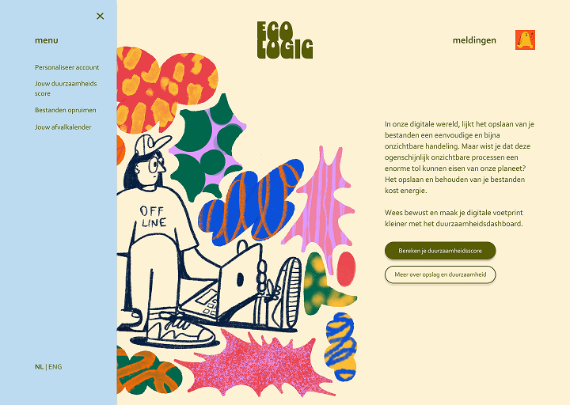
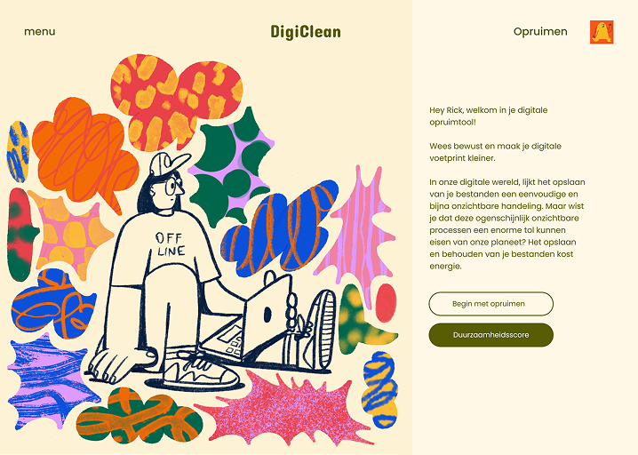
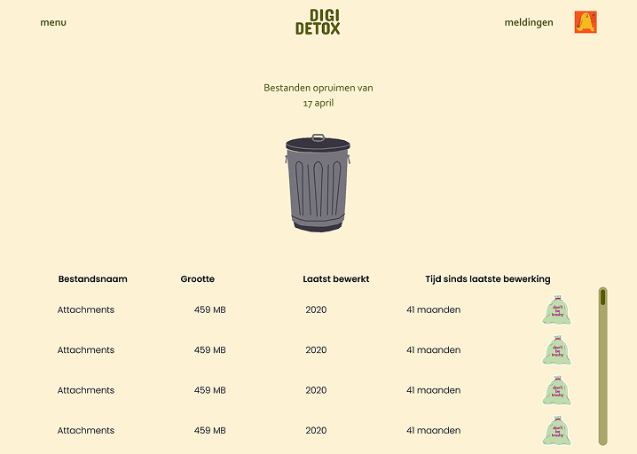
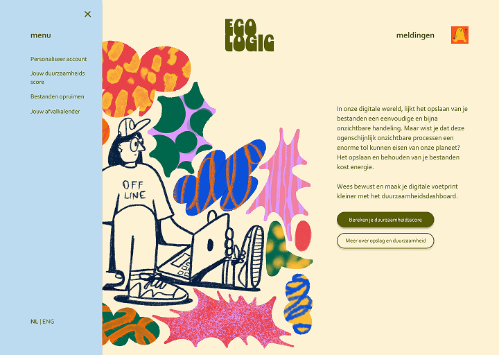
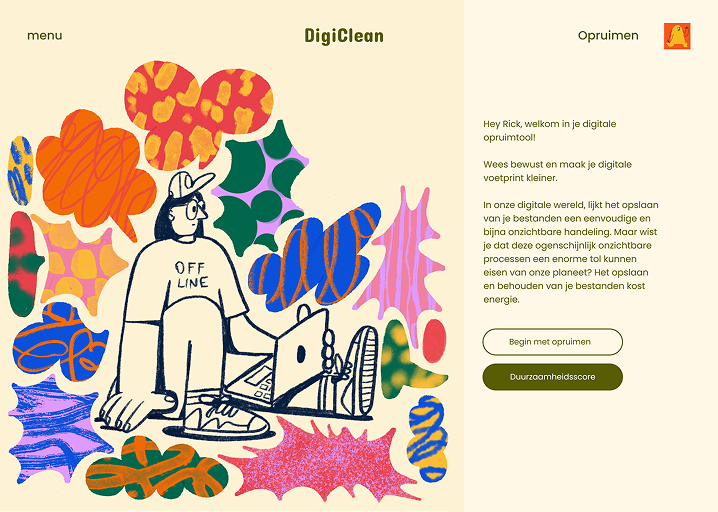
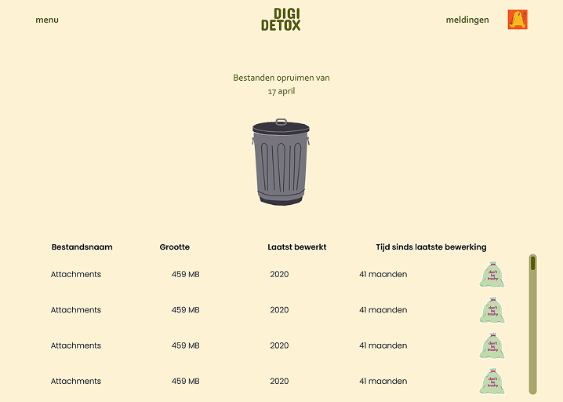

Digital Summer Clean-Up ’25 — HvA
Visit ProjectOverview
At the Amsterdam University of Applied Sciences (HvA), unused and duplicate files were piling up—wasting time and inflating the school’s data-center footprint. We applied behavioral design to normalize digital tidying through a visual awareness campaign (bold stickers/posters with QR codes to the tool) and an interactive prototype that made deleting feel Efficient and effortless.
The prototype showcased clear file categories (Date, Size, Last Edited), gameification mechanics to promote regular file maintenance, and risk-reducing guidance. Nudging (repeated visual cues) and social proof (peer visibility) kept file maintenance top-of-mind.
Skills
- Graphic Design
- Prototyping
- Visual Interface Design
- Concepting
- Client Communication
- Figma
- UX Research
- Behavioral Design
- Design Thinking
Progress
The development of the final product was preceded by an extended research phase. Based on the assignment provided by the Knowledge Mile, we investigated the issues caused by large-scale cloud storage usage—both ecological and financial. From this research, we identified our key stakeholders and target user demographic.
Maintaining a user-centered approach throughout, we conducted extensive user interviews, followed by multiple rounds of user testing and guerilla tests. Through this process, my team and I developed a concept aimed at alleviating—and ultimately mitigating—the excessive use of organizational cloud storage through the regular use of our cleanup app.
After developing our first prototype, I conducted user tests with our focus group. Using their feedback, I iterated the design and created a final prototype in Figma, which we successfully presented to our client.
 





Insights
I grounded the strategy in BJ Fogg’s B=MAP model and complemented it with Cialdini’s principles (Commitment, Social Proof) and Nir Eyal’s Hook Model. The goal was to drive repeated use of a digital decluttering tool.
Survey findings (n=12) revealed a clear intention–behaviour gap: most respondents clean up only once a year despite strong awareness of digital impact. Motivation was primarily practical (storage and efficiency), while the main barriers were lack of time and fear of deleting important files.
These insights led us to prioritise “ability” in the design: a low-friction, intuitive flow with minimal steps, clear actions (e.g., drag-and-drop), and smart suggestions (e.g., flagging files unused for two years) to reduce decision effort and uncertainty.
For activation, we proposed timed prompts via email/Teams/intranet and a recurring ritual such as “Digital Trash Day,” supported by just-in-time reminders when many unused files are detected. Given mixed attitudes toward gamification, we focused on mature feedback loops—progress and measurable impact (e.g., CO₂ savings)—and avoided shame-based or overly competitive mechanics, keeping any social elements positive and opt-in.